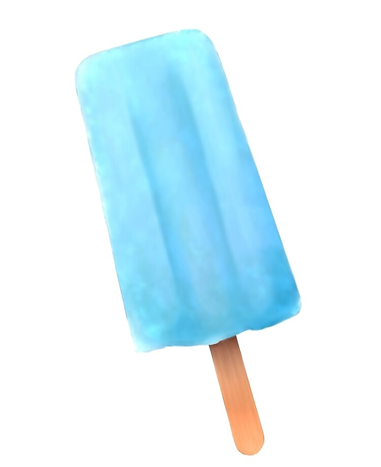

Sea-Salt Ice Cream

Description
This ice cream dessert is salty, but sweet! Perfect for lazy afternoons with your friends.
Ingredients
- Sea salt
- 2 eggs
- 1 tsp Vanilla extract
- 1/3 cup sugar
- 1 cup heavy whipping cream
- Blue food dye
- Green food dye
Directions
- Separate the eggs into two good sized bowls.
- Beat the egg whites until stiff.
- Mix the egg yolks and sugar until thick.
- Slowly bring the milk to a boil over medium heat, stirring occasionally.
- Pour the hot milk into yolk/sugar mixture and mix well.
- Pour milk/yolk/sugar mixture back into pot and heat on medium until thicker to make a custard (DON'T LET IT BOIL! also, if you can't get it to a custard thickness,just get it as thick as you can).
- Pour custard in with beaten egg whites and mix well.
- Add sea salt (keep adding salt until it tastes salty sweet, but be careful not to add to much).
- Put mixture in fridge to cool.
- Once cool, add cream and vanilla .
- (Optional) Add 12 drops of blue coloring, and 3 drops of green coloring.
- Freeze, following your ice cream maker’s instructions.
- f you don't have an ice cream maker pour mixture into 1 or 2 metal cake pans and set in freezer. Let sit until edges become firm, then remove and mix. Repeat until uniformly frozen.